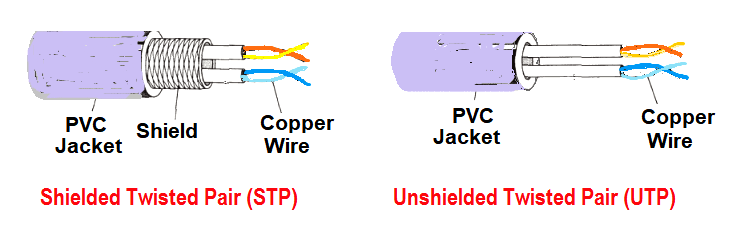

In data communication terminology, a transmission medium is a physical path between the transmitter and the receiver i.e. it is the channel through which data is sent from one place to another
It is also referred to as Wired or Bounded transmission media. Signals being transmitted are directed and confined in a narrow pathway by using physical links. Features:
It consists of 2 separately insulated conductor wires wound about each other. Generally, several such pairs are bundled together in a protective sheath. They are the most widely used Transmission Media. Twisted Pair is of two types:
⇢ Least expensive
⇢ Easy to install
⇢ High-speed capacity
⇢ Susceptible to external interference
⇢ Lower capacity and performance in comparison to STP
⇢ Short distance transmission due to attenuation
⇢ Better performance at a higher data rate in comparison to UTP
⇢ Eliminates crosstalk
⇢ Comparatively faster
⇢ Comparatively difficult to install and manufacture
⇢ More expensive
⇢ Bulky
It has an outer plastic covering containing an insulation layer made of PVC or Teflon and 2 parallel conductors each having a separate insulated protection cover. The coaxial cable transmits information in two modes: Baseband mode(dedicated cable bandwidth) and Broadband mode(cable bandwidth is split into separate ranges). Cable TVs and analog television networks widely use Coaxial cables.
Advantages:It uses the concept of reflection of light through a core made up of glass or plastic. The core is surrounded by a less dense glass or plastic covering called the cladding. It is used for the transmission of large volumes of data.
The cable can be unidirectional or bidirectional. The WDM (Wavelength Division Multiplexer) supports two modes, namely unidirectional and bidirectional mode.
Stripline is a transverse electromagnetic (TEM) transmission line medium invented by Robert M. Barrett of the Air Force Cambridge Research Centre in the 1950s. Stripline is the earliest form of the planar transmission line. It uses a conducting material to transmit high-frequency waves it is also called a waveguide. This conducting material is sandwiched between two layers of the ground plane which are usually shorted to provide EMI immunity.
In this, the conducting material is separated from the ground plane by a layer of dielectric.
It is also referred to as Wireless or Unbounded transmission media. No physical medium is required for the transmission of electromagnetic signals. Features:
These are easy to generate and can penetrate through buildings. The sending and receiving antennas need not be aligned. Frequency Range:3KHz – 1GHz. AM and FM radios and cordless phones use Radio waves for transmission.
It is a line of sight transmission i.e. the sending and receiving antennas need to be properly aligned with each other. The distance covered by the signal is directly proportional to the height of the antenna. Frequency Range:1GHz – 300GHz. These are majorly used for mobile phone communication and television distribution.
TInfrared waves are used for very short distance communication. They cannot penetrate through obstacles. This prevents interference between systems. Frequency Range:300GHz – 400THz. It is used in TV remotes, wireless mouse, keyboard, printer, etc.